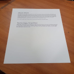

jscanify is capable of detecting & highlighting documents in an image, as well as undistorting it. It is fast and easy to learn.
It can run in the browser or on a server with NodeJS. It supports React too!
Demo
Select an image below to scan

Scan results will appear here
Installation
$ npm i jscanify
import jscanify from 'jscanify'<script src="https://docs.opencv.org/4.7.0/opencv.js" async></script>
<script src="https://cdn.jsdelivr.net/gh/ColonelParrot/jscanify@master/src/jscanify.min.js"></script>Usage
const scanner = new jscanify();
const paperWidth = 500;
const paperHeight = 1000;
image.onload = function () {
const resultCanvas = scanner.extractPaper(image, paperWidth, paperHeight);
document.body.appendChild(resultCanvas);
};